Aediculae II, The Vault Gallery, Victoria, BC. November 16th to December 9th, 2023.
Tree (Passive Amplifier), 49" x 24" x 24", 28:00 minute audio sequence, artificial bird, cardboard, iPad, iPods, iPhones, paint, 2023.
Aediculae I, 45.502580, -73.617180, 2023/06/25
In the asphalt city, gridded, squared, and rectangular, all journeys happen in long straight lines. Cellphone says it's a 1-hour and 10-minute walk, a bit over 10,000 steps. 10,000 steps in 70 minutes, i.e. 4,200 seconds of aimless walking in the city. A pleasant walk for plunging into the out-side and for letting one's thoughts carve out straight lines, rectangles and squares. On the high streets there are many cars, lots of people, shops one after the other, so many places to eat and drink. It's a nice day and the sun is showering maximum heat on all of us. Many people are sitting on packed terrasses in bars. Drinks jammed with ice cubes are poured down gullets, whetting thirsty bodies tired by the 32-degree temp. Hustle and bustle everywhere, snippets of conversations, streams of friendly chat, engines humming, cars honking, police sirens wailing, laughter, foreign words, and feet tapping their way down the scorching pavement. All this blends together. It mixes around and transforms itself into that soup of noise and sound which makes up the symphony of world cities. Each of the elements of the musical composition plays its part live! all improv! and then melts back into the cacophonous whole. To hear each individual sound, one must concentrate. Pick them out, detach them one by one from the background in order to focus on the scattered particles which compose this one big unity. So doing, and if your hearing and concentration are good, you can distinctly hear the different conversations, the noises from across the street, the psshhhhh of an opened beer can, the squeal of the Ford pick-up's tires on the paving, et cetera.
But concentrating so long so intensely can hurt your head. That's when... overstimulated... need a break.
The main arteries get abandoned for the refuge of the back alleys. The trek continues and the step-count continues to mount. A desire for calm, and also for fresh air, leads almost naturally to the nearby cemetery. Among the tombstones, the brouhaha of the city seems further away. Here, its profusion is not much more than a rumour. This place belongs to the quiet of fish – and of the dead. It's nice and pleasing, this quiet tranquility. Even if in the distance the sirens of Worry are still heard.
From here out, 13,000 steps left, along with back-breaking thirst and exhaustion and heat. Not far from the entrance of the cemetery, towards Notre Dame des Neiges, a strange building draws the eye and body. One might say a chapel but that's not what it is. It is built in a recess and blends in with the hill. Trees cover the shady part. This normally empty spot is not so today. Paintings, multiple structures and phones with DIY cardboard amplifiers have been placed there and populate this gentle scene. It's strange. Not strange as in "extravagant and confusing" but strange as in "one wouldn't expect to find this here." As if everything weren't really where it belonged. As if all this were a little out of place, a little hors lieu. However, it is not a kind of strangeness that hits, pushes, and bumps you. It's rather a kind of strangeness that brushes against you and manifests itself in its own unique way and with its own kind of clumsiness. The bon mot here would be atopos, no-place. Footprints underline the fact that others must surely have stopped here. Intrigued by this outdoor installation. There are canvases which imagine curious buildings composed of coloured squares, rectangles, and sometimes circles. Silently, a mouth, a pair of eyes, a nose will emanate from the surface of these structures, fragile like the drawings of a child. Then one sees faces embedded in the houses. Or maybe on the contrary these houses are embedded in faces. The idea of construction and assembly suggested by the paintings is, as such, even more obvious and tangible. This whole set-up is not the work of a master of technique, of someone ostensibly demonstrating their skills. On the contrary, this more resembles the undertaking of a free and aimless naivety. It is fragile and tremulous, but the vulnerability of the whole confers on it a delicate beauty. Like the spasms of a little puppy just born moments ago. What's more, there is sound coming from the 2 DIY cardboard speakers. Each of the speakers plays a different instrument. One puts out a sinusoidal wave made by a synthesizer. The other diffuses the sounds of a baryton (an instrument similar to a viola da gamba and commonly used in Europe until the end of the 18th century). After spending a while in this spot, it becomes easier to understand the game these two instruments are playing. Occasionally, they each play on their own turn, sometimes they answer each other as if in dialogue, sometimes they listen to one another and agree to play a sweet and soft melody simultaneously, often stopping suddenly. And then sometimes one has the impression these sounds are impinging on one another, as if stepping on each other. Maladroitly, accident-style. The moments when the instruments connect and produce a harmonious melody drift away in the air as quickly as they appear. The ephemerality of epiphany. The ambiance created by the whole practically forces the soul into contemplation. At the limits of this chapel-shaped building, the objects placed here on the ground are an offering of generosity and of kindness. Being here does me good. These arms, open and outstretched, pour into my breast a little sugary alterity. I accept the precious respite offered by this labour of earnestness. Thank you to whoever prepared and placed this here. There is in the recollection of these shapes the healing power ascribed to the sacred. Thanks to you, I can now return to myself. To myself and to my steps.
By Jean-Noël Le Bail. Translated from the French by C. McDonald
Aedicule (Diary Entry) (5), 8 x 10", ceramic resistor, graphite and oil on canvas, 2023.
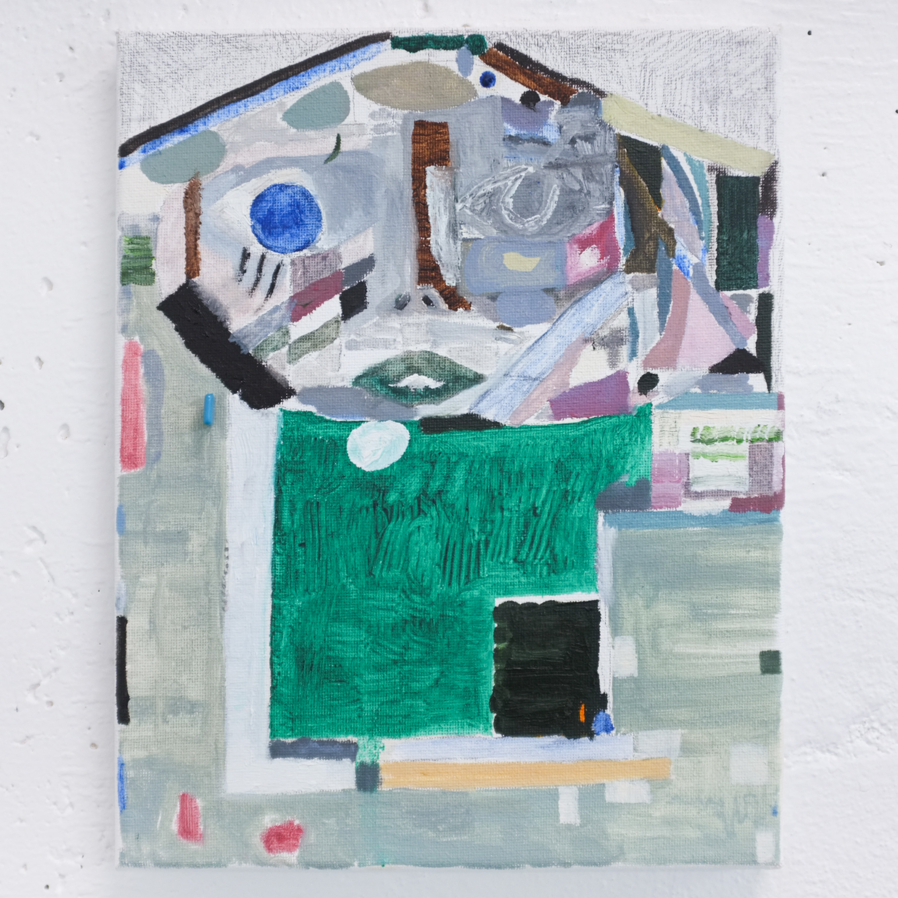
Aedicule (Diary Entry) (6), 8 x 10", ceramic resistor, graphite and oil on canvas, 2023.
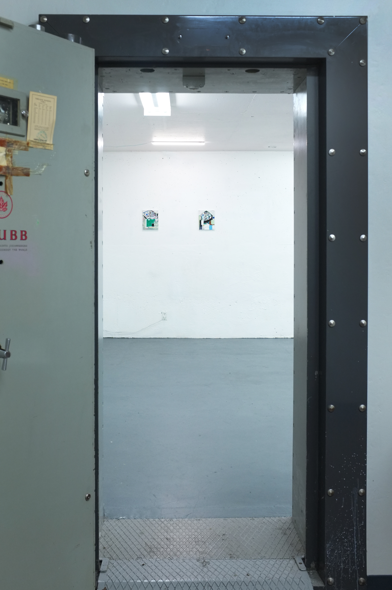
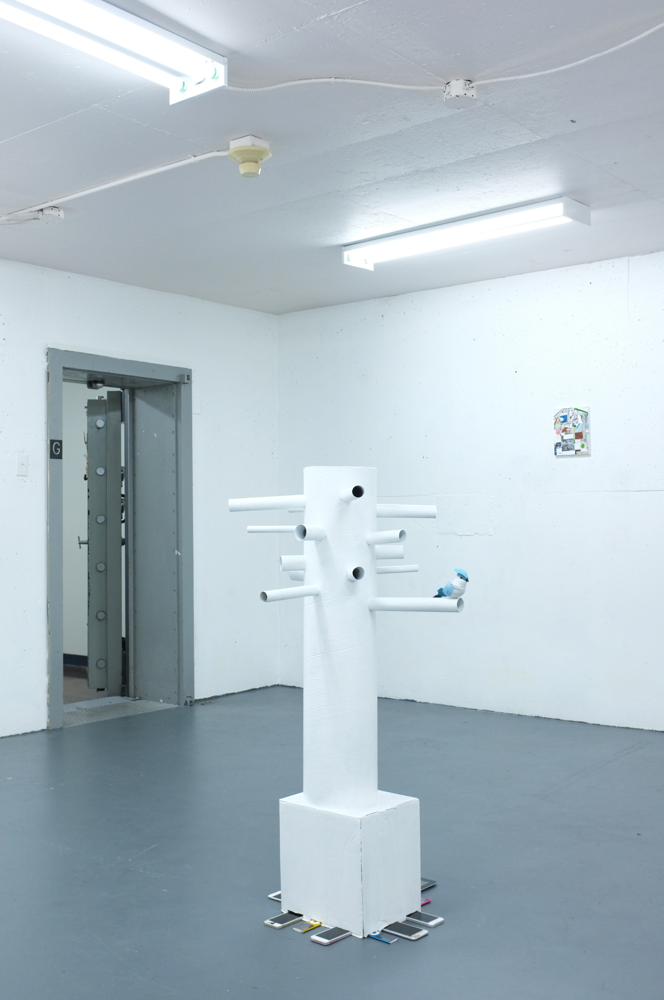
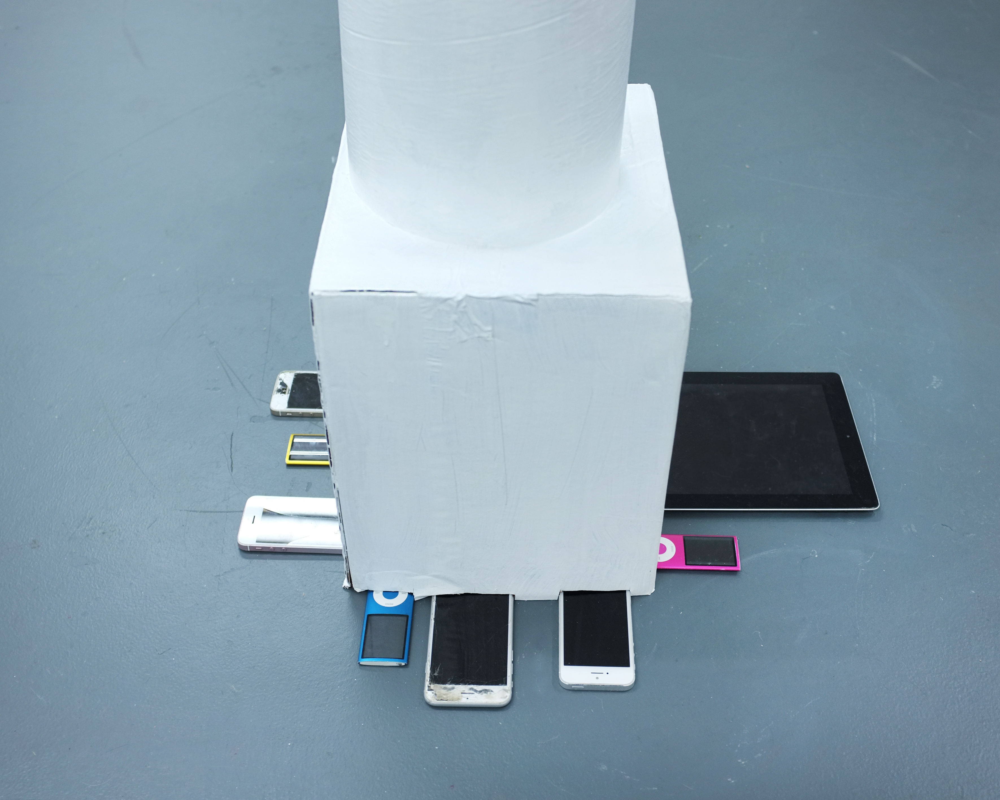
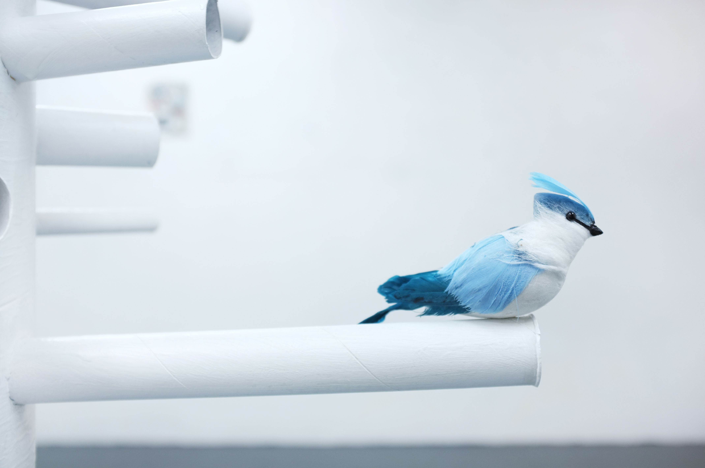
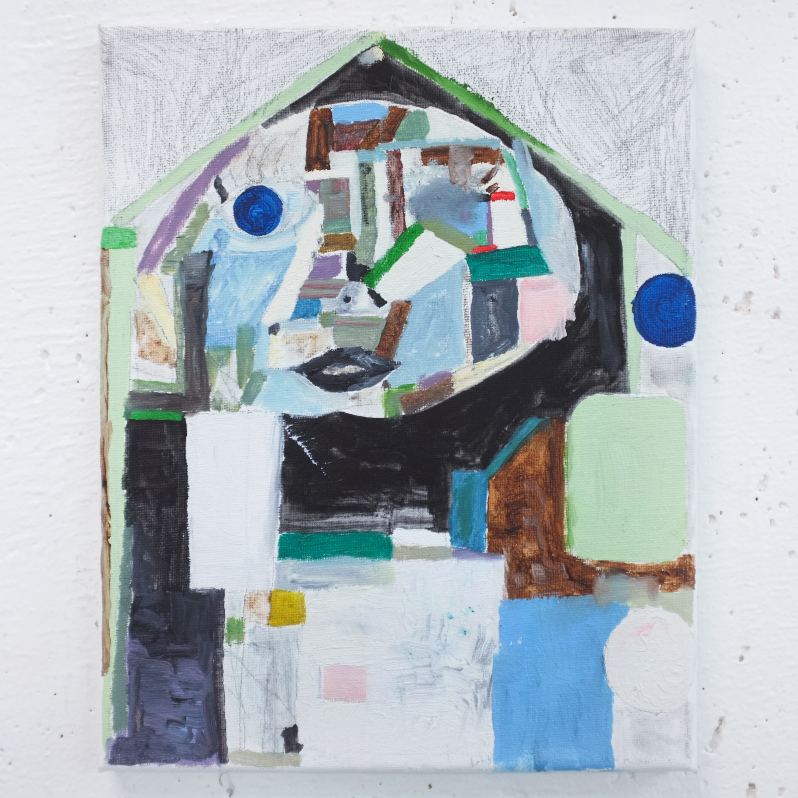
Aedicule (Diary Entry) (2), 8 x 10", graphite and oil on canvas, 2023.
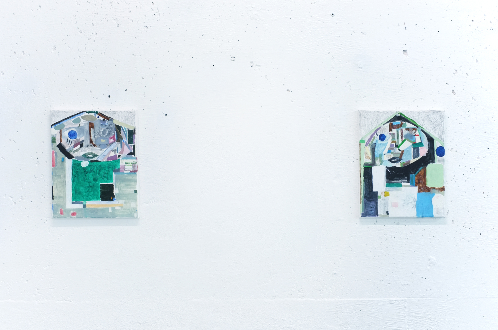
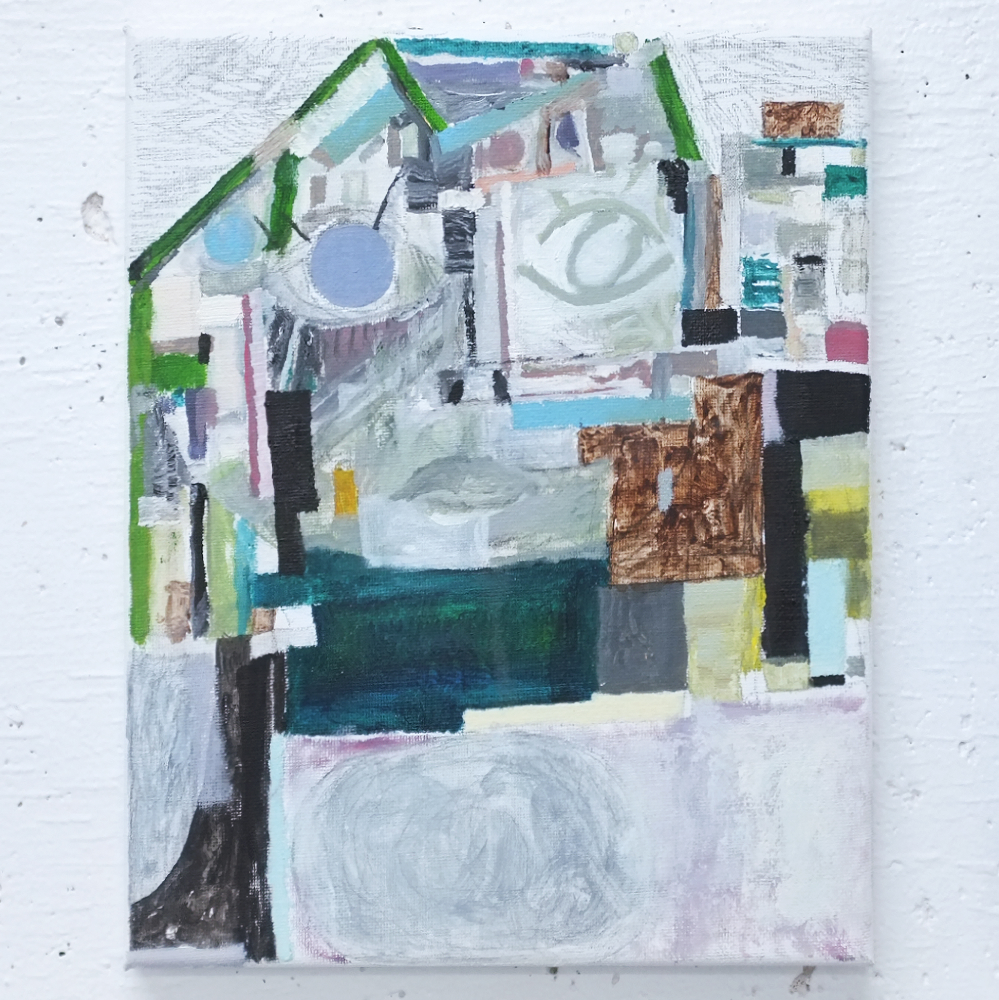
Aedicule (Diary Entry) (7), 8 x 10", graphite and oil on canvas, 2023.
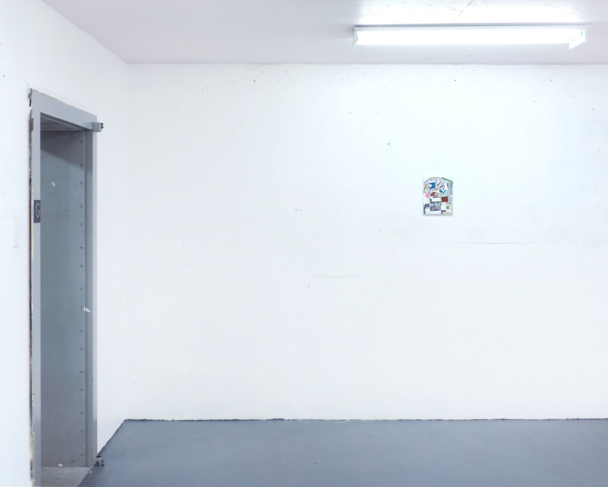
Aedicule (Diary Entry) (1), 8 x 10", graphite and oil on canvas, 2023.
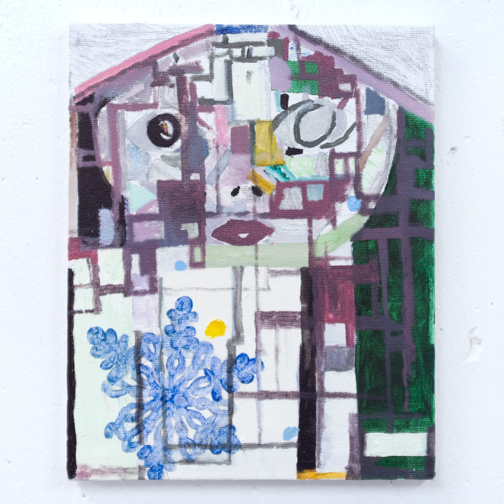
Aedicule (Snowflake), 8 x 10", ceramic resistor, graphite and oil on canvas, 2023.
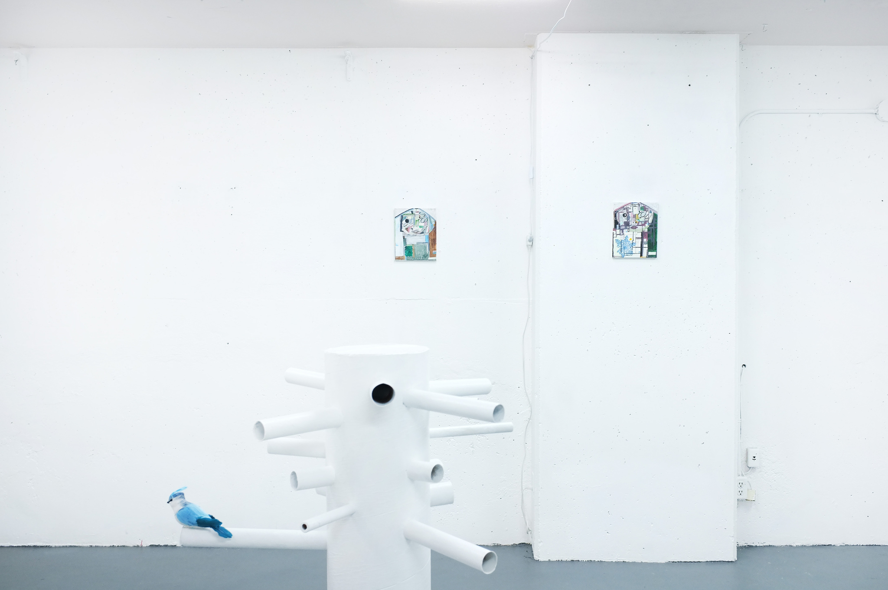
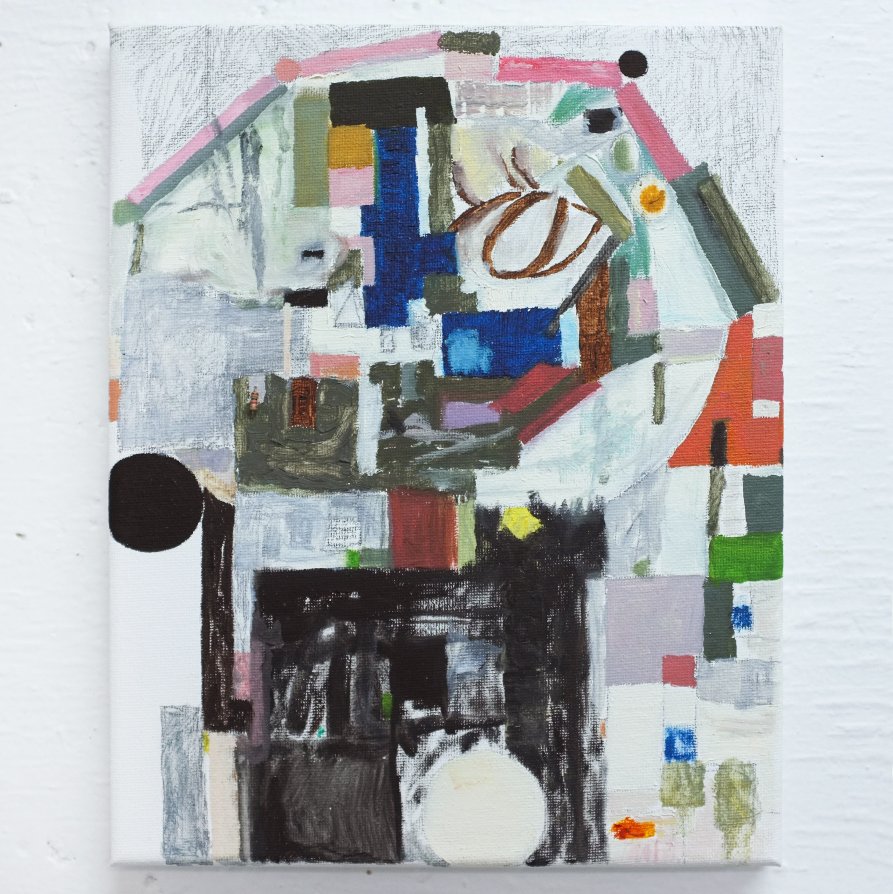
Aedicule (Diary Entry) (3), 8 x 10", ceramic resistor, graphite and oil on canvas, 2023.